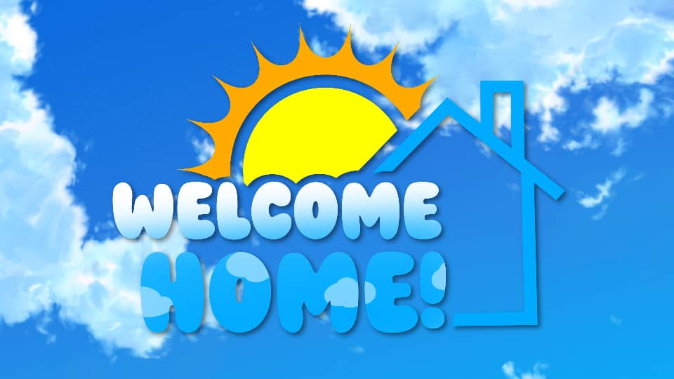
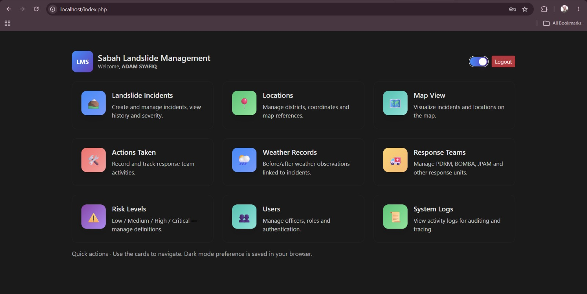
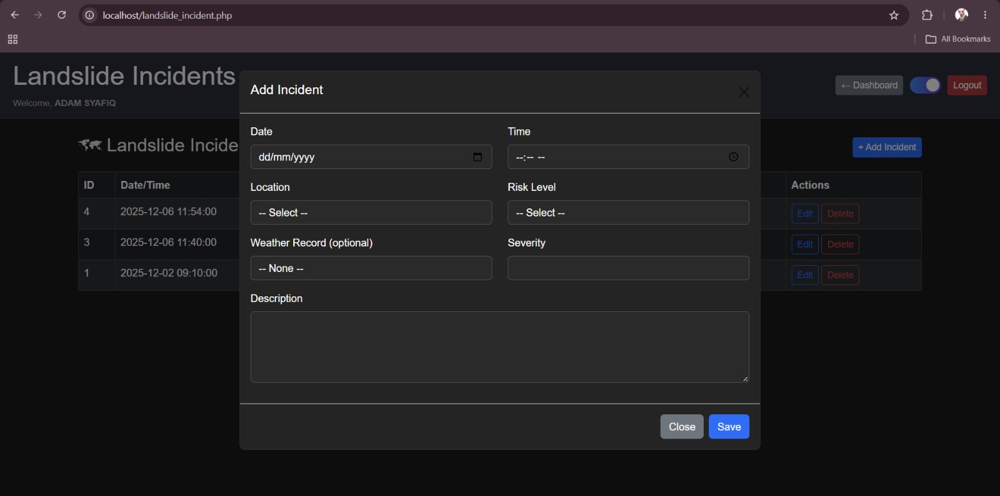
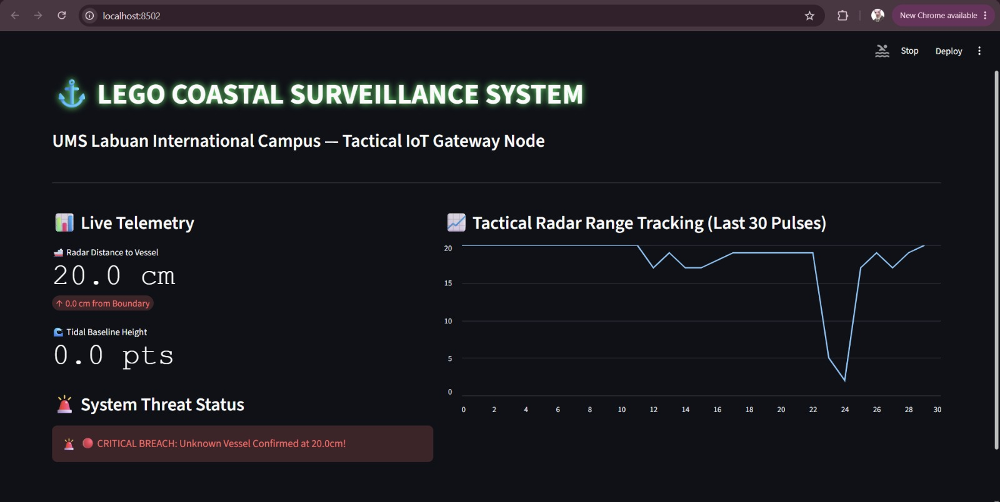
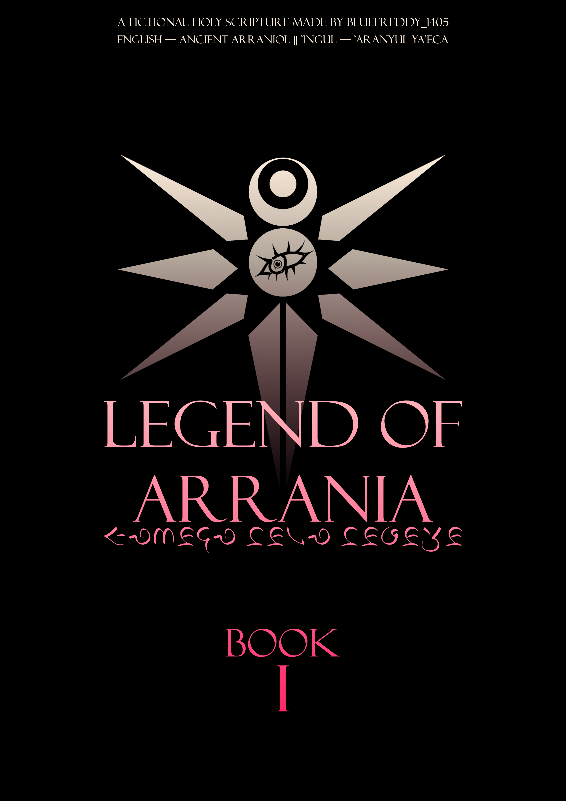

My Portfolio
Welcome to my portfolio! Here are some of the projects and assignments I have completed during my studies.

Project 1: Welcome Home Animation Project
Project 1 is where I and my team created a character selection scene in Blender based on an original storyboard, while taking into account the creative vision for the project. The concept is inspired by cute social simulation games akin to Animal Crossing, and the project is called Welcome Home, where players choose characters to join a peaceful village. The project was then salvaged and reworked with a brand new line of story, whilst retaining the Septy character as one of the main characters in the new story. The new to-be-released project is named as "Welcome to Happydale!" or in its original Chinese language title "歡迎來到快樂谷！" which is a definitive reimagining of the original story and characters.


Project 2: Landslide Management System
Project 2 is a system designed to monitor and manage landslide risks in vulnerable areas. The system collects data from various sources, including weather forecasts, soil moisture levels, and historical landslide records, to assess the likelihood of landslides occurring in specific locations. The system was developed using MyPHP and Apache XAMPP to enhance safety measures and facilitate timely interventions in case of potential landslide events in Malaysia.

Project 3: Coastal Surveillance System
Project 3 is a system designed to monitor and track coastal activities and potential threats. The system utilizes advanced sensors and cameras to provide real-time surveillance of coastal areas, ensuring the safety of both marine life and human activities. The system was developed using Arduino to show the features of security measures and facilitate timely responses to any suspicious or dangerous activities in the coastal regions of Malaysia. A physical prototype of the system was built out of LEGOs, both for the coastal surveillance system and the infiltrating boat.

Project 4: Legend of Arrania Narrated Story
The Legend of Arrania is a fictional story set in a time before the Multiverse of Collided Universe, an Undertale Alternative Multiverse created by me back in 2020, exists. The story does not have any actual relevance in the real world, as it is merely a work of fiction. The story does, however, take some cues from the real world in terms of conworld (an imaginary world, especially one with incredibly detailed cultures, languages, and geography) and conculture (an imaginary culture, especially one associated with a conworld or conlang).

Project 5: Portfolio Website
Project 5 is the very website you are navigating and using, my portfolio website! The website was created using HTML, CSS, and JavaScript, and it serves as a platform to showcase my work, skills, and achievements. The website is designed to be user-friendly and easily navigate, providing visitors with an engaging experience as they explore my portfolio.